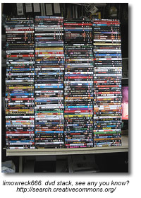

Video and Audio Public Performance Rights
Public Performance Rights for Non-Feature Video/DVDs
When feature and non-feature videos or DVDs are played in a "domestic" setting, such as a home, only a home-use license is required. However, when a non-feature video or DVD is shown in a "public" setting, such as a school, then a public performance license is necessitated. When ordering a non-feature video or DVD for use in a school setting, your invoice to the supplier should specify that you are acquiring public performance rights to use this item in a school setting.
Public Performance Rights Licensing for Feature Films
In order to show feature films legally in a classroom, a school or school division must acquire a public performance rights license.
Living Sky School Divison has purchased the following licensing for all schools within the division:
Audio Ciné Films
- Represents Alliance Atlantis, Walt Disney Pictures, Universal Studios, MGM Studios, United Artists, Nickelodeon, Miramax, Pixar, and more.
- License covers video from rental stores and public libraries, and purchased (in Canada) home-use video/DVD.
- The ACF license does not cover VHS/DVD purchased from the USA. Video/DVD can be purchased from Canadian subsidiaries, i.e. Blockbuster.ca or Amazon.ca, as long as the studio is included in the ACF license.
Visual Education Centre (VEC) / Criterion Pictures
- Represents Warner Brothers, Columbia Pictures, 20th Century Fox, Lions Gate, Sony Pictures, Dreamworks, Paramount Pictures and more.
- Covers video/DVD from rental stores and public libraries, purchased (in Canada) home use video/DVD and video/DVD borrowed from friends or students. The key element is that the video/DVD is legally manufactured, which excludes all self-produced video/DVD.
- Criterion accepts VHS/DVD purchased from the USA as long as the studio is included in the Criterion license.